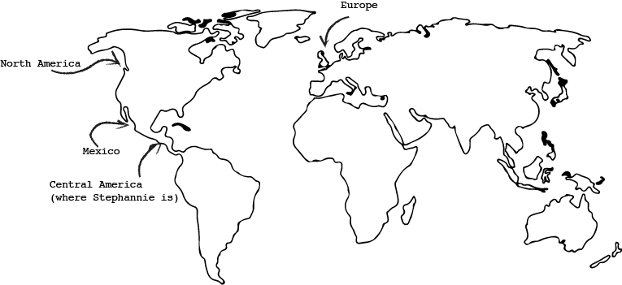
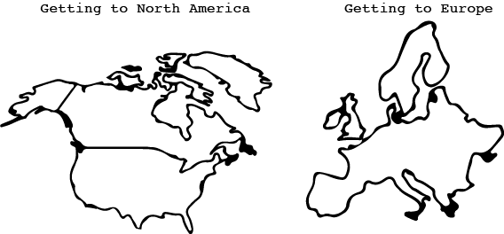

This is Stephannie.
She is 19 yearsold.
Her favrite color is teal.
She is an artist.
She is a trans woman.
She is from El Salvador, which is in Central America.
Which is increasing its violence against queer people, especially trans people. She was recently disowned by her fmaily for coming out as trans. She had to live homeless on the streets looking for shelter when she was brutalized by police. Stephannie fears for her life in her home country and decides if she is to survive she needs to leave.
But, her options aren’t great.
The only places that accept queer asylum and will offere her all the benefits that come with asylum, are in North America and Europe. Both have pros and cons.
The biggest issue with getting to Europe is that Stephannie will need to be able to buy a plane ticket. She cannot at the moment as plane tickets to Europe from South America can cost hundreds of dollars in US Currency. However, Europe has the most forginving aslyum laws for LGBTQ people.
She has a similar problem with getting to the U.S. by plane. Her best option is to get to the U.S. by land. She could join the caravans of people who are heading to the US to request asylum, but that can be incredibly dangerous path for a queer person. Studies show queer are more liekly to be shunned or assualted in the intermediary period getting to the U.S.
The U.S. does accept LGBTQ people escaping from violence for asylum. However, at the moment under the Trump adminsttation, no one’s asylum is being accepted and many people are waiting in an intermediary zone escaping violence.
What do you think Stephannie should do? Where should she go and how should she get there?